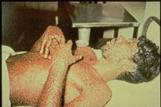

|
The Chinese are credited with making the observation that
deliberately infecting people with mild forms of smallpox
could prevent infection with more deadly forms and provide
life long protection. Knowledge of the technique, known as
variolation, worked its way west to Turkey by the 18th century.
Lady Mary Wortley Montagu, the wife of the British Ambassador
to Turkey and who had once survived smallpox, had her children
treated and brought the ideas back to Britain, where research
began on how to reduce the inoculation's sometimes-awful side
effects.
In 1798, the British physician Edward Jenner published his
long-term observation that cowpox exposure protected milkmaids
from smallpox. To see if this protection could be artificially
induced, he exposed a "healthy boy" to cowpox virus from a
milkmaid, and then attempted to infect the boy with smallpox.
(Obviously, this experimental method is unethical by today's
standards.) This method works because cowpox shares antigens
with smallpox, but doesn't cause the disease.
|
|

Images courtesy of CDC
|
| Fortunately, the vaccine worked. The boy had developed
an immunity to smallpox from his exposure to cowpox. The technique
of vaccination against smallpox quickly spread through the world.
In 1980, the World Health Assembly officially declared "the
world and its peoples" free from endemic smallpox. The Immunization
Action Coalition is an excellent source of information about
childhood, adolescent and adult immunizations and hepatitis
B educational materials. |
comes from
the Latin word
for cow,
|
| Disease |
Max. cases (year) |
1996 cases |
| Measles |
894,000 (1941) |
500 |
| Diphtheria |
207,000 (1921) |
1 |
| Mumps |
152,000 (1968) |
600 |
|
Since the days of Jenner, scientists have made great progress
in developing vaccinations for many diseases. The table to the
left shows the effectiveness of three vaccines: measles, diphtheria,
and mumps. |
Discrimination of self from nonself
| The success of the immune system depends on its ability to discriminate
between foreign (nonself) and host (self) cells. |
 |
Survival requires both the ability to mount a destructive immune
response against nonself and the inability to mount a destructive response against
self. |
|
|
-David Huston, Biology of the Immune System,
JAMA 278 (22) |
|
|
|
When an organism is threatened by microorganisms, viruses, or cancer cells,
the immune response acts to provide protection.
Normally, the immune system does not mount a response against self. This lack
of an immune response is called tolerance.
In some cases, the immune system does mount an immune response against self.
If an error is made, and an immune response is made against self, tolerance to
self is lost. This condition is called autoimmunity (from Greek, "self-immunity").
Examples of autoimmune diseases in humans are: asthma, lupus, and arthritis.
|
The nude mouse cannot mount an immune response
| The nude mouse has a defect in its immune system, and can only live if protected
from pathogens. The mouse to the right has a transplant of rabbit skin, and can't
reject the foreign tissue. Mice with immune deficiencies are very useful in cancer
research because human cancer cells can grow into tumors allowing new ways to
test cancer therapy. |

|
Important definitions
This problem set will make use of these terms, and give examples of their significance.
- The immune system
- Cells in our bone marrow, thymus, and the lymphatic system of ducts and nodes, spleen, and blood that function to protect us.
- Antigen
- Anything causing an immune response, usually foreign material but may be our own tissues.
- Pathogen
- Any disease causing micro-organism.
- Tolerance
- Non-reactivity of the immune system, usually refers to "self" but may include foreign tissue in organ transplants.
- Autoimmunity
- A failure of tolerance, the immune system reacts to self.
- Chemokines
- Molecules released by pathogens and infected tissues to attract cells of the immune
system.
- Cytokines
- Signaling molecules released by one cell to cause a response in another. Signaling is extremely important in
our immune response.
- Innate immunity
- Protection that is always present. Includes phagocytic (cells that
eat other cells) macrophages and dendritic cells.
- Adaptive immunity
- Protection that arises by an immune response, including humoral immunity producing antibodies and cellular immunity.
Begin Problem Set
The Biology Project > Immunology
> Immunology Problem Set
The Biology Project
The University of Arizona
Revised: June 17, 2002
Contact the Biology Project
http://biology.arizona.edu
All contents copyright © 2000-02. All rights reserved.
|